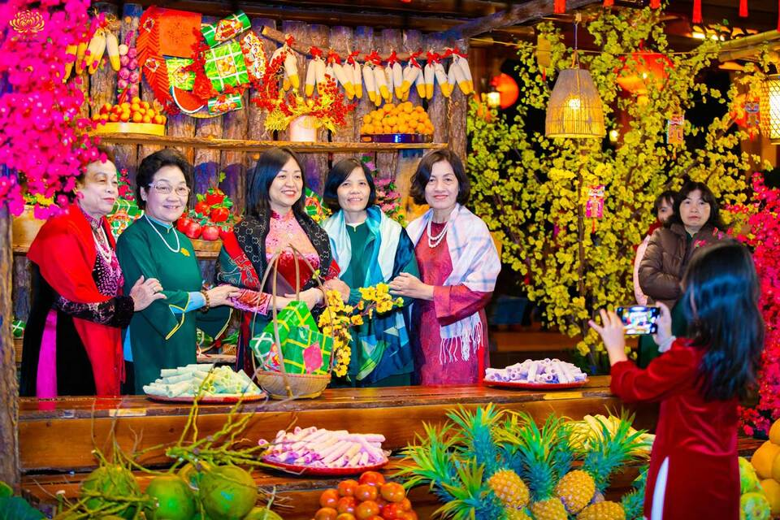
Chợ quê ngày Tết – Góc nhỏ hoài niệm giữa không gian Nhà lớn
Giữa không gian thanh tịnh của chùa Ba Vàng, chợ quê Tết được tái hiện đầy sống động, như một nhịp cầu nối đưa ta trở về những mùa Tết xưa
Chi tiết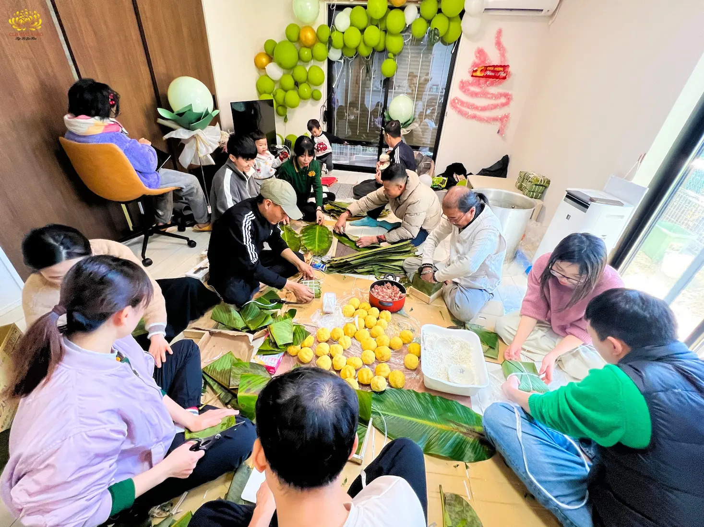
Gói bánh chưng nơi xa xứ – Tết đoàn viên trong tình đạo và tình quê
Dù ở nơi xa, nhưng tinh thần lục hòa đã trở thành chiếc cầu nối gắn kết mọi người, cùng hướng về cội nguồn và giữ gìn giá trị truyền thống. Những chiếc bánh chưng không chỉ là món ăn ngày Tết, mà còn là biểu tượng của sự đoàn viên và yêu thương – dù ở bất cứ nơi đâu.
Chi tiết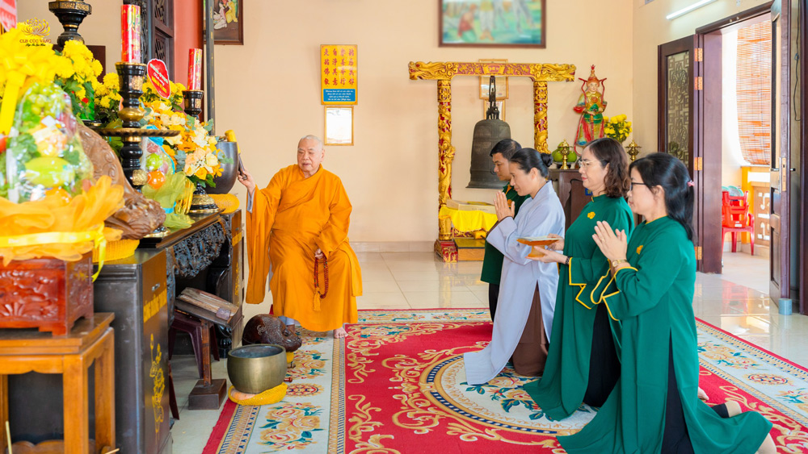
Với lòng tri ân và biết ơn sâu sắc, nhân dịp Tết Nguyên đán, Cô Chủ nhiệm Phạm Thị Yến cùng đại diện các Phật tử đã tới vấn an sức khỏe Hòa thượng Thích Thiện Pháp - Uỷ viên Thường trực Hội đồng Chứng minh, ..
Chi tiết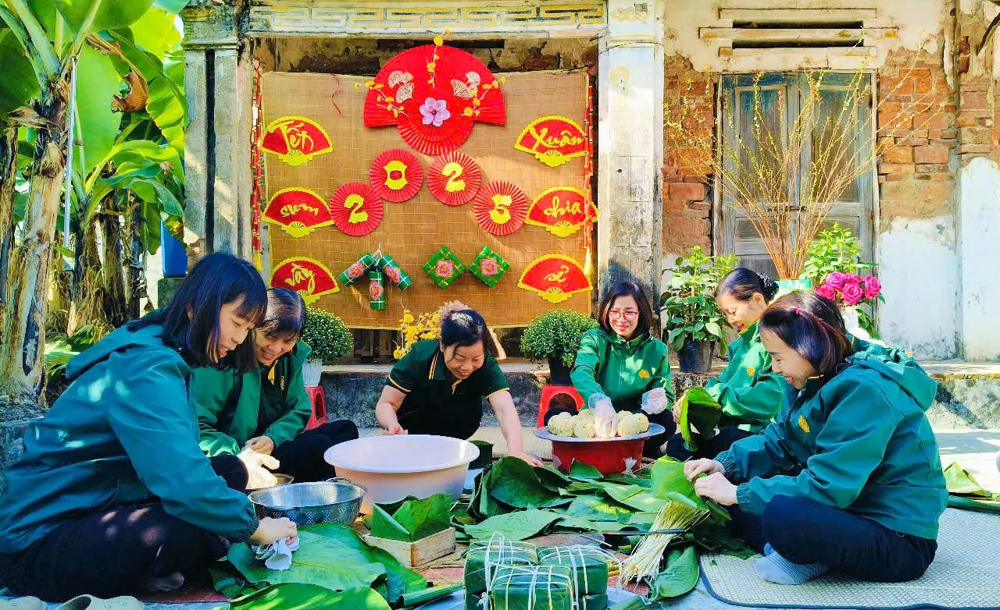
Gói bánh chưng lục hòa – Gói trọn yêu thương và tình thân ngày Tết
Dù mỗi đạo tràng có cách gói bánh khác nhau, nhưng tất cả đều chung một hương vị đặc biệt – hương vị của sự hòa hợp và yêu thương. Những chiếc bánh chưng không chỉ đơn thuần là món ăn truyền thống mà còn là biểu tượng của sự đoàn kết, cùng nhau hướng đến sự tốt đẹp.
Chi tiếtNgày 06/12/Giáp Thìn, Cô Chủ nhiệm Phạm Thị Yến (Tâm Chiếu Hoàn Quán) cùng đại diện các đạo tràng trong câu lạc bộ đã tham gia chương trình họp tổng kết công tác Phật sự chùa Ba Vàng năm 2024.
Chi tiết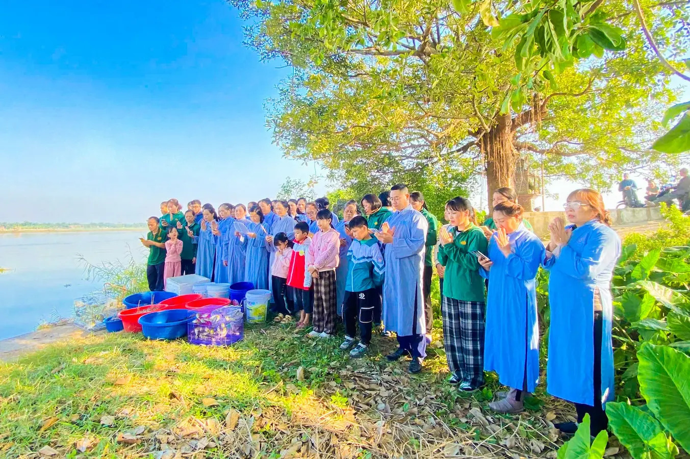
Tiếp nối lòng từ của Phật hoàng Trần Nhân Tông - CLB Cúc Vàng thực hành phóng sinh cứu vật
Các đạo tràng thuộc CLB Cúc Vàng, theo sự hướng dẫn của Cô chủ nhiệm Phạm Thị Yến, đã tổ chức hoạt động ý nghĩa: thực hành phóng sinh cứu vật.
Chi tiếtRộn ràng đêm văn nghệ kính mừng 766 năm ngày Phật hoàng Trần Nhân Tông đản sinh
Đêm văn nghệ là cầu nối gắn kết hiện tại với những trang sử hào hùng của nước Đại Việt. Qua các tiết mục đặc sắc, người tham dự được nhắc nhở về tinh thần yêu nước,
Chi tiết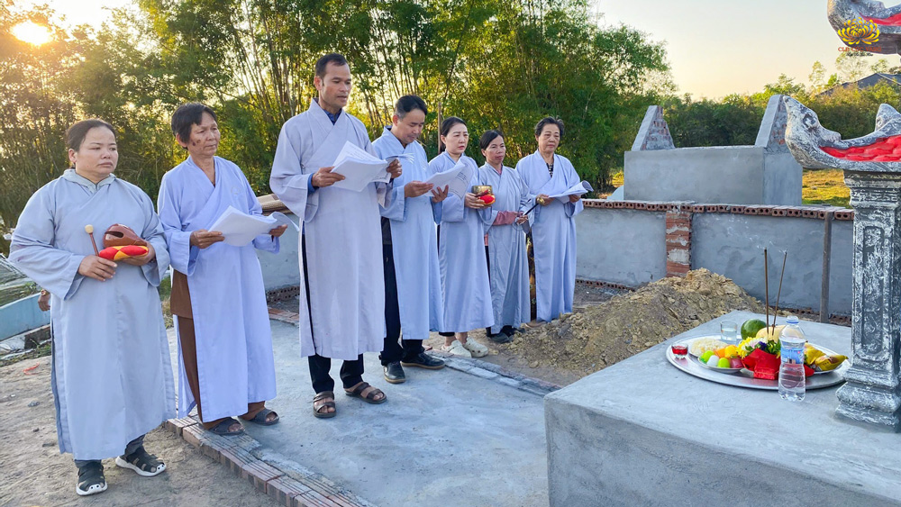
Phật tử trợ duyên các gia đình thực hiện lễ sang cát, bốc mộ theo nghi thức Phật giáo
Từ lâu, việc chăm lo thờ cúng và mộ phần cho người quá vãng đã trở thành nét văn hóa truyền thống của người Việt Nam, thể hiện lòng hiếu thảo và sự trân trọng cội nguồn.
Chi tiết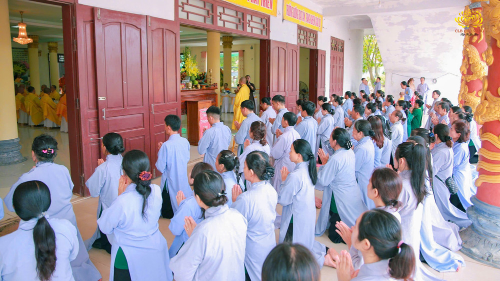
Quảng Bình - Phật tử CLB Cúc Vàng gieo trồng phước lành nơi Tam Bảo
Phật tử trong CLB Cúc Vàng đã cùng nhau chuẩn bị và nấu các món ăn, sắp xếp vật phẩm để dâng lên chư tôn đức Tăng nhân dịp Lễ kỷ niệm 15 năm thành lập GHPGVN tỉnh Quảng Bình và tưởng niệm 5 năm ngày Cố đức Trưởng lão Hòa thượng Thích Trí Quang viên tịch.
Chi tiết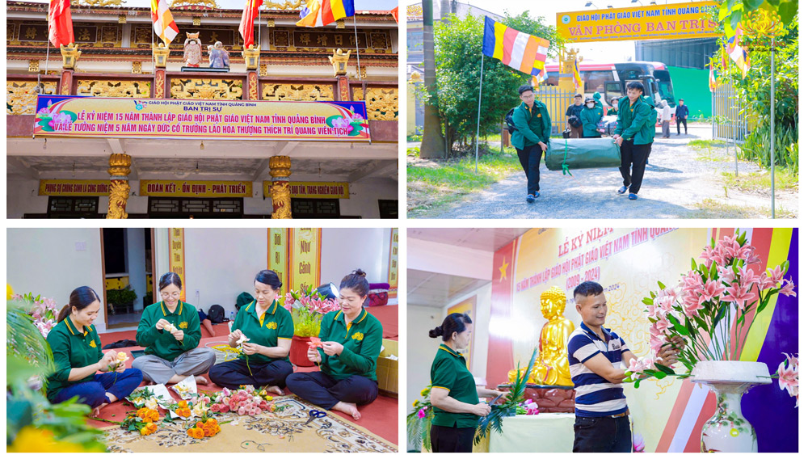
Rộn ràng công tác chuẩn bị cho Lễ kỷ niệm 15 năm thành lập GHPGVN tỉnh Quảng Bình
Ngày 11/11/2024, tại chùa Đại Giác sẽ diễn ra chương trình kỷ niệm 15 năm thành lập Giáo hội Phật giáo Việt Nam tỉnh Quảng Bình.
Chi tiết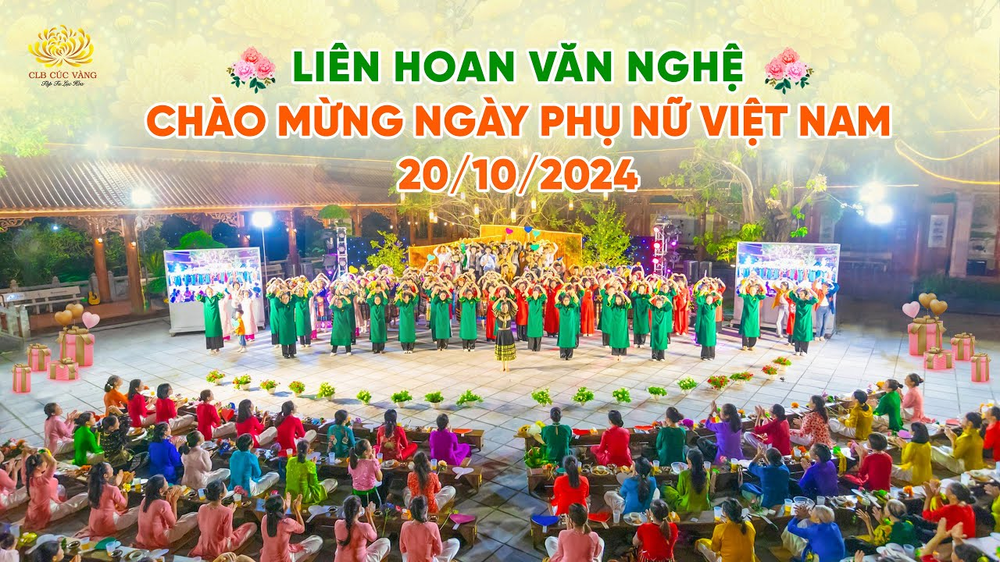
[Video] Liên hoan văn nghệ: Chào mừng ngày phụ nữ Việt Nam 20-10-2024
Liên hoan văn nghệ: Chào mừng ngày phụ nữ Việt Nam 20-10-2024
Chi tiết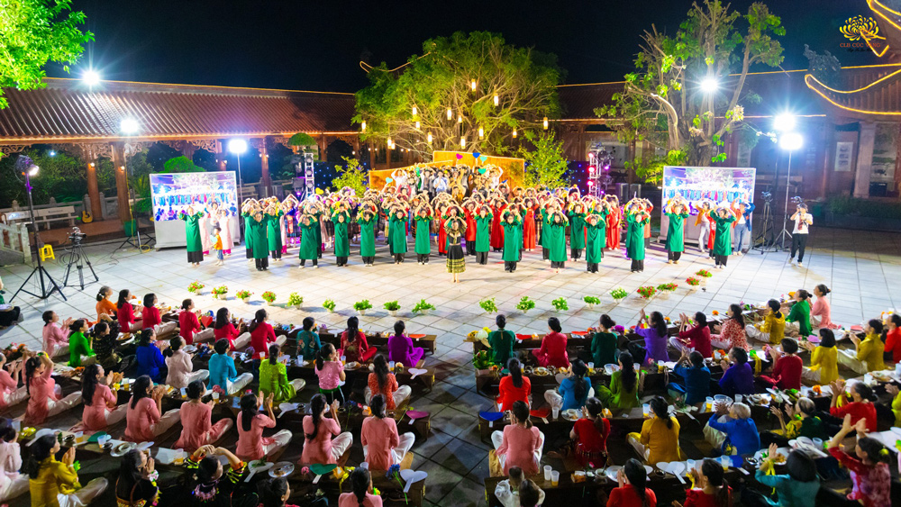
Hãy trở thành những người phụ nữ chiến thắng ở đời sau!
Chúng ta là những người phụ nữ hạnh phúc ở thế gian, bởi vì chúng ta là đệ tử của Đức Phật. Chúng ta được học lời Phật dạy, biết cách làm sao cho cuộc đời mình được hạnh phúc, đời sau được an vui, giác ngộ, giải thoát, chấm dứt hẳn câu hỏi “Làm sao tôi lại khổ thế này?”.
Chi tiếtTri ân Cô - Người phụ nữ nhỏ bé mà phi thường
Nhân ngày 20/10 là ngày Phụ nữ Việt Nam chúng cháu xin thay mặt những người đã mang ơn Cô cứu giúp, tặng Cô bó hoa tươi thắm này thay cho lời chúc, chúng cháu xin Cô nhận lấy và cầu thỉnh Cô tiếp tục hướng dẫn chúng cháu tu tập, phận sự cho tới ngày thành Phật.
Chi tiếtPhật tử CLB Cúc Vàng đã có dịp ghé thăm Tháp Chuyển Pháp Luân, nơi Đức Phật thuyết giảng bài Pháp đầu tiên về Tứ Diệu Đế – bốn chân lý về cuộc đời: Khổ - Tập - Diệt - Đạo.
Chi tiết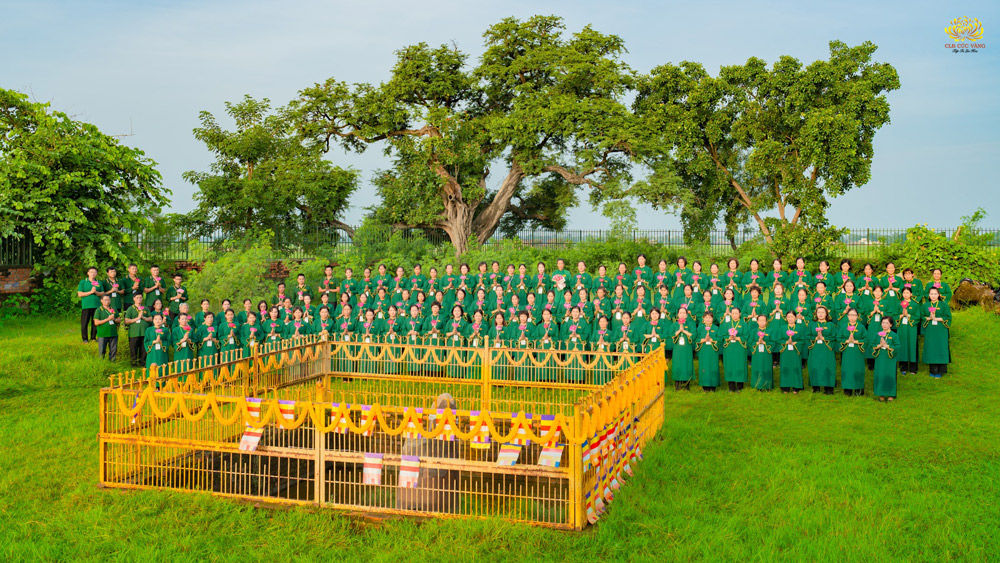
Chiêm bái Thánh tích Đức Phật Câu Lưu Tôn - Nguyện chúng con luôn giữ được niệm cầu Vô thượng Bồ đề
Thánh địa Đức Phật Câu Lưu Tôn đản sinh được vua A Dục cho dựng cột trụ đá đánh dấu vào năm 249 trước Tây lịch, nhân chuyến thăm viếng Gotihawa, Nepal.
Chi tiếtPháp đàn Lương Hoàng Bảo Sám đặc biệt tại thánh địa Lâm Tỳ Ni
Tại thánh địa Lâm Tỳ Ni (Nepal), đoàn hành hương Ấn Độ CLB Cúc Vàng đã nhất tâm hướng về chùa Ba Vàng, hòa chung cùng đại chúng khai lễ tụng kinh sám hối Pháp đàn Lương Hoàng Bảo Sám.
Chi tiết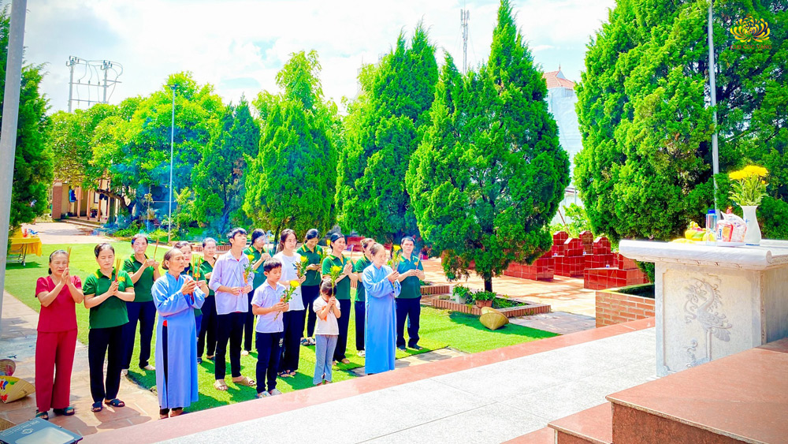
Hướng về kỷ niệm ngày Thương binh liệt sĩ 27/7 - Phật tử CLB Cúc Vàng mãi khắc ghi một niệm ơn
Thực hành tri ân và đền ân theo lời Đức Phật dạy, hướng tới kỷ niệm ngày thương binh liệt sĩ, từ khắp các tỉnh thành, Phật tử CLB Cúc Vàng - Tập Tu Lục Hòa đã cùng nhau dọn dẹp và thành kính dâng hương, hoa, tưởng niệm tri ân các anh hùng liệt sĩ.
Chi tiếtCác Phật tử trong CLB Cúc Vàng - Tập Tu Lục Hòa đã huân tập về chùa Hải Quang, TP.Hồ Chí Minh vấn an Thượng tọa Thích Đạt Đức và dâng lời tác bạch cúng dường chư tôn thiền đức nhân mùa an cư năm 2024.
Chi tiết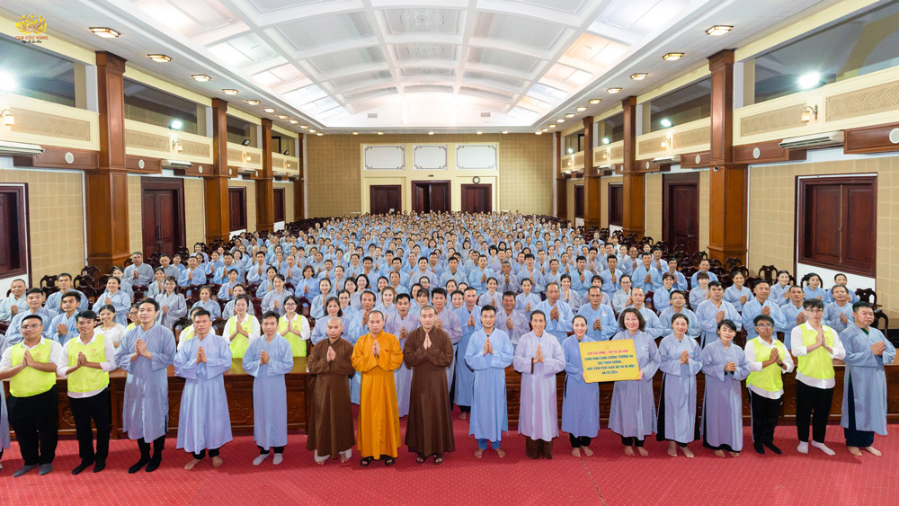
12/5/Giáp Thìn, Cô Phạm Thị Yến cùng đại diện các Phật tử trong CLB Cúc Vàng, CLB Tuổi trẻ Ba Vàng đã có mặt tại hạ trường Sóc Thiên Vương - Học viện Phật giáo Việt Nam (Hà Nội) để thành kính cúng dường chư tôn đức Tăng nhân mùa an cư năm 2024.
Chi tiếtPhật tử trong CLB Cúc Vàng - Tập Tu Lục Hòa, CLB Tuổi trẻ Ba Vàng đã sắm sửa vật thực, tịnh tài dâng lên cúng dường chư tôn đức Tăng Ni đang an cư tại Thiền viện Trúc Lâm Tây Thiên.
Chi tiếtTại Trường hạ Tùng lâm Quán Sứ: Phật tử CLB Cúc Vàng cúng dường chư Tăng nhân mùa an cư năm 2024
Cô Chủ nhiệm Phạm Thị Yến cùng đại diện các Phật tử trong CLB Cúc Vàng - Tập Tu Lục Hòa đã thành kính dâng phẩm vật, tịnh tài cúng dường chư Tôn Đức Tăng nhân mùa an cư tại Trường hạ Tùng lâm Quán Sứ, Hà Nội.
Chi tiết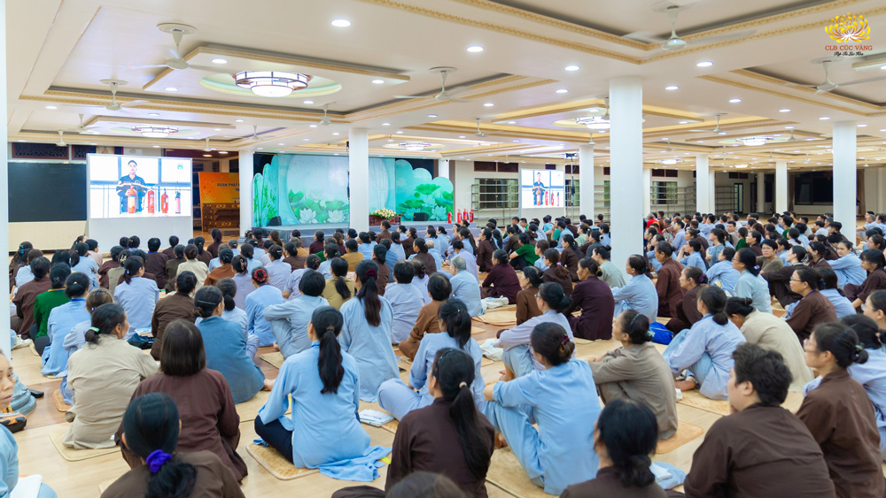
Công tác chuẩn bị cho khóa tu mùa hè chùa Ba Vàng đang được các Phật tử triển khai để đảm bảo điều kiện sinh hoạt, an toàn cháy nổ, an toàn vệ sinh thực phẩm, an ninh trật tự,... cho khóa tu được thành công tốt đẹp.
Chi tiết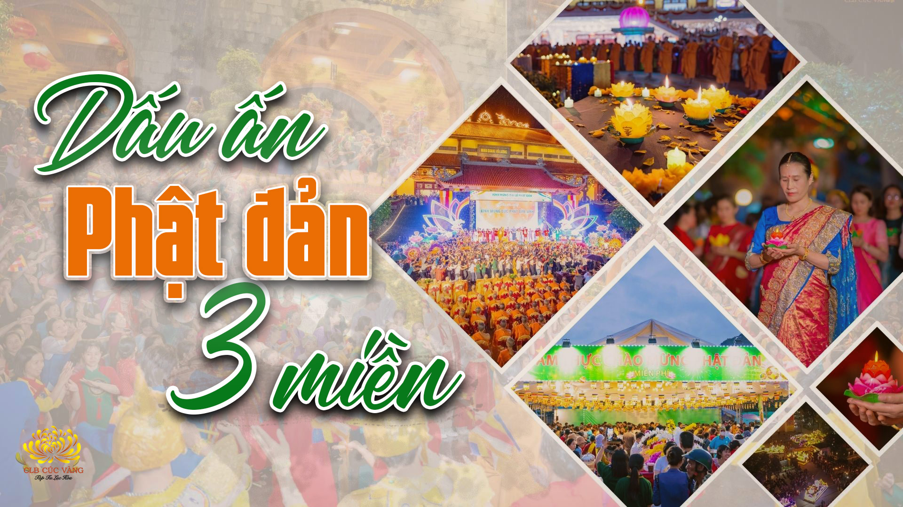
Dấu ấn Phật đản khắp 3 miền Bắc - Trung - Nam: Lan tỏa giá trị từ bi, trí tuệ
Đại lễ Phật đản 2024 được tổ chức trên khắp ba miền tổ quốc. Phật tử khắp nơi hân hoan đón mừng, tổ chức nhiều hoạt động ý nghĩa.
Chi tiết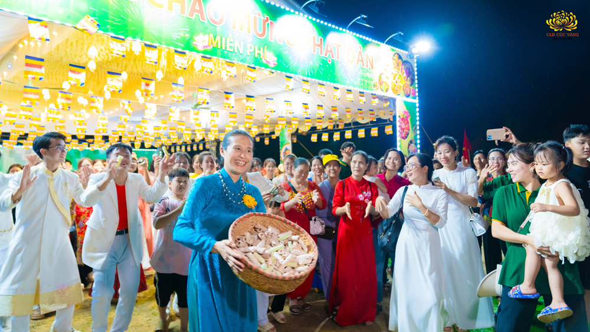
Không gian Ẩm thực kỷ niệm Đức Phật Bụt đản sinh diễn ra vào chiều ngày 16/04/GT (tức ngày 23/05/2024) vừa qua đã nhận được sự hưởng ứng nhiệt tình của bà con địa phương.
Chi tiết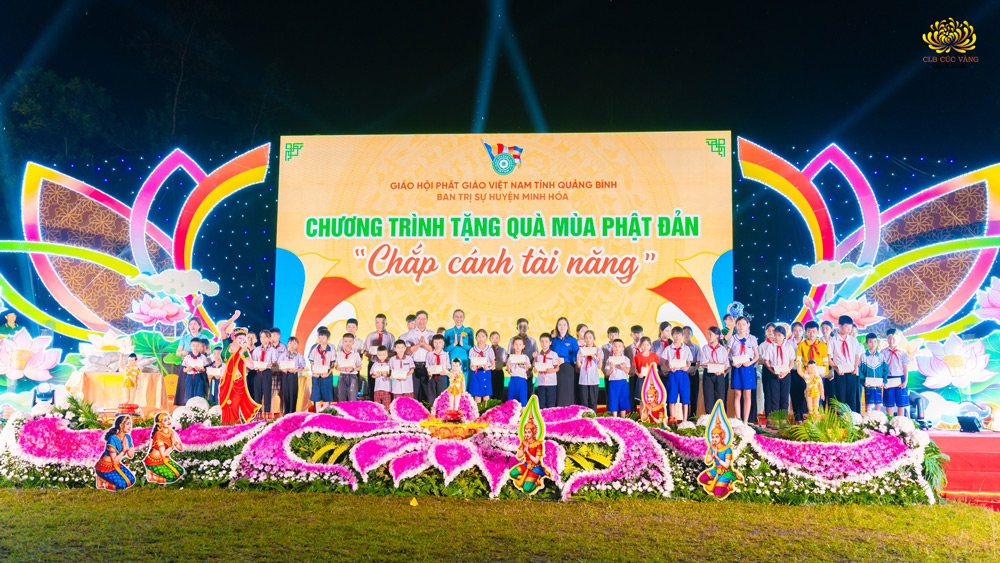
Chắp cánh tài năng - Trao tặng những phần quà ý nghĩa tới các em học sinh có hoàn cảnh đặc biệt
Trong chương trình Đêm văn nghệ kính mừng Đức Phật đản sinh, BTS GHPGVN huyện Minh Hóa đã trao tặng những phần quà nhân mùa Phật đản đến các đối tượng có hoàn cảnh đặc biệt trên địa bàn huyện.
Chi tiết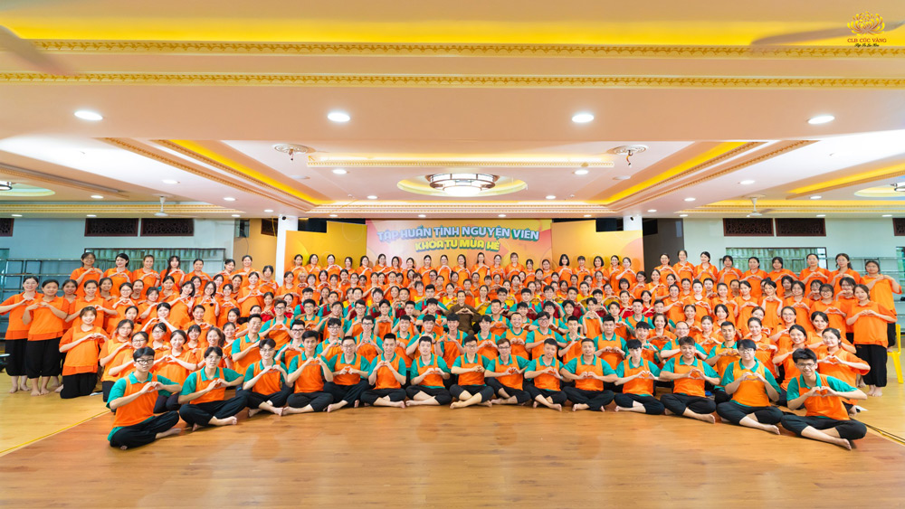
Tập huấn tình nguyện viên - Những người nối tiếp Khóa tu mùa hè chùa Ba Vàng
Việc làm tình nguyện viên khóa tu là trải nghiệm, đối diện với những bước thăng trầm của cuộc đời, có thể là 7 ngày, 28 ngày hoặc 40 ngày.
Chi tiếtHoan ca Đức Phật đản sinh - Mừng ngày Đấng Đại Giác Ngộ ra đời
Những người con Phật cùng nhau cất lên tiếng hoan ca để ca ngợi sự đản sinh cao quý của Đấng Đại Giác Ngộ - Phật Thích Ca Mâu Ni.
Chi tiết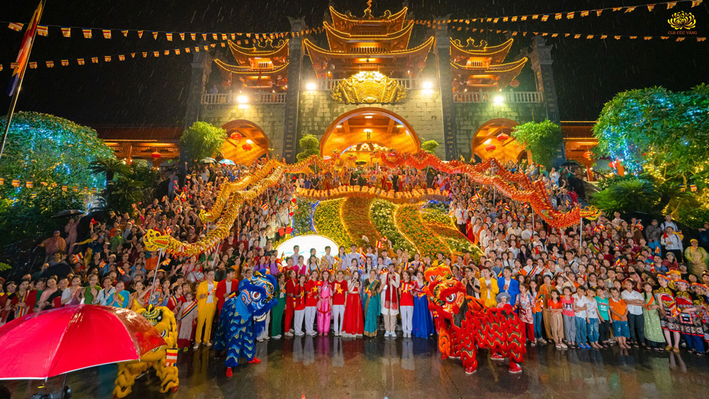
Nhìn lại những khoảnh khắc ý nghĩa trong Đại lễ Phật Đản chùa Ba Vàng 2024
Đại lễ Phật đản để lại ấn tượng sâu sắc với những hoạt động ý nghĩa như: Trải nghiệm không gian Ẩm thực Tết Phật Đản, dâng đăng cúng dường Đức Phật đản sinh, đêm văn nghệ kính mừng Phật Đản,...
Chi tiết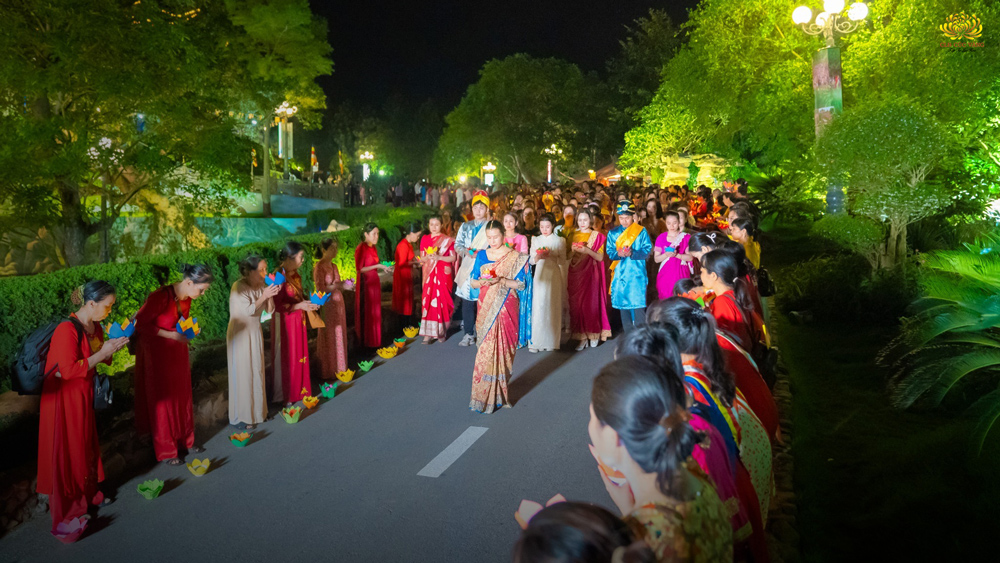
Dâng đăng cúng dường Đức Phật đản sinh: Thắp lên ánh sáng Phật Pháp lan tỏa khắp muôn nơi
Trong không khí thiêng liêng mừng ngày khánh đản, theo bước chân Sư Phụ, đại Tăng, Cô cùng các Phật tử đã thắp sáng và dâng lên cúng dường Đức Thế Tôn những ngọn hoa đăng lung linh để bày tỏ lòng tôn kính và tri ân tới Ngài.
Chi tiết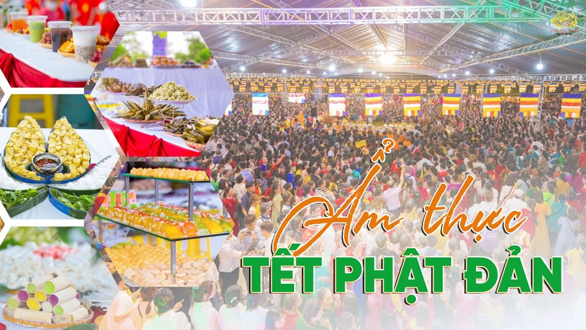
Ẩm thực Tết Phật đản - 84 món ăn đặc sắc: Phật Pháp có giá trị thiết thực
Hơn cả những món ăn đơn thuần, chương trình ẩm thực Tết Phật đản chùa Ba Vàng đã khiến nhiều người khẳng định được giá trị thiết thực của Phật Pháp
Chi tiết